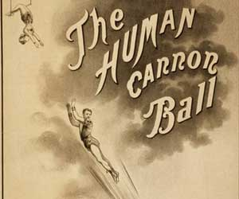

|
| Home | Talent | Cosmetic | Deformity | Abnormal | Ethnological |
The Human Cannonball
April 2nd, 1877 English-born Rosa Richter debuted a spectacular finale to her aerial act at the newly constructed Royal London Aquarium. The 16-year-old ‘Zazel’ descended into the depths of a cylindrical tube of cold metal and, with a great explosion, was propelled some 70 feet into the air and over the heads of amazed spectators. Announced with and explosion and puff of smoke, young Rosa “Zazel” Richter had become the first human cannonball. Zazel was an accomplished tightrope and aerial acrobat by the time she became a human projectile. She was known for her compact strength, her beauty and physique. In fact, a writer at the time stated that ‘her most perfect figure warrants repeated viewings’. Zazel was the protégé of exalted Canadian rope-walker William Leonard Hunt, who was known as The Great Farini. In fact Farini, who most famous for his high-wire walk above Niagara Falls, actually invented the human cannonball device that spectacularly propelled Zazel through the air. In 1871 he developed and patented the mechanism for launching a human projectile through the air into a safety net. The ‘canon’ device itself was equal parts illusion and fact. The explosion served to enhance the audience experience as the propulsion was actually achieved via springs and tension. But still, the act was a stunning success and captured the imagination of audiences everywhere. At her peak, Zazel was earing 200 pounds a week and playing to crowds in excess of 20,000 every day in England and the USA. The old human cannonball act was the most dangerous of all the aerial acts. The danger was due to the fact that the performer had far less control over their trajectory and movement. A traditional aerialist placed their faith in their strength and conditioning. But when it came to the human cannonball faith was forcibly placed in mathematics and a small touch of luck. Over time, the tension method of propulsion proved unreliable. Modern human cannonballs use compressed air in their cannons. While many followed in her footsteps, Zazel was the first human cannonball and the level of danger she subjected herself to was the highest. It took some time but the odds finally caught up with Zazel. Eventually Rosa “Zazel” Richter missed the net following a launch. She survived, but broke her back and retired. She then faded into history. |